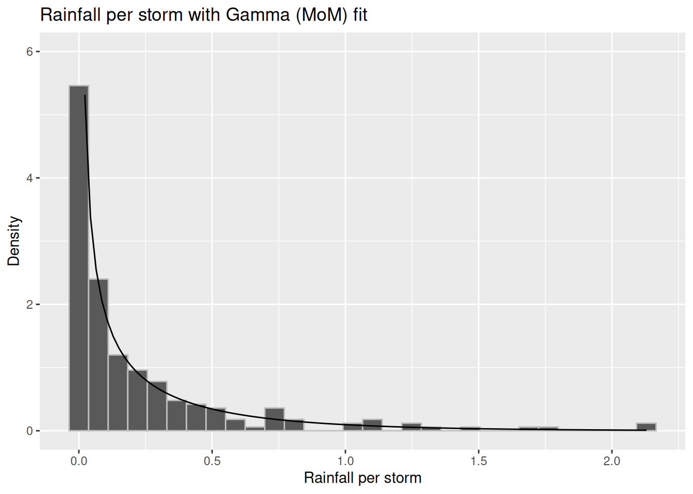
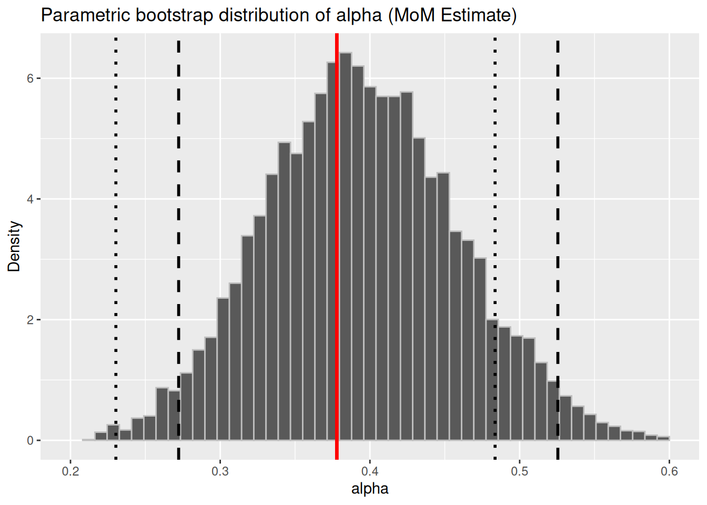
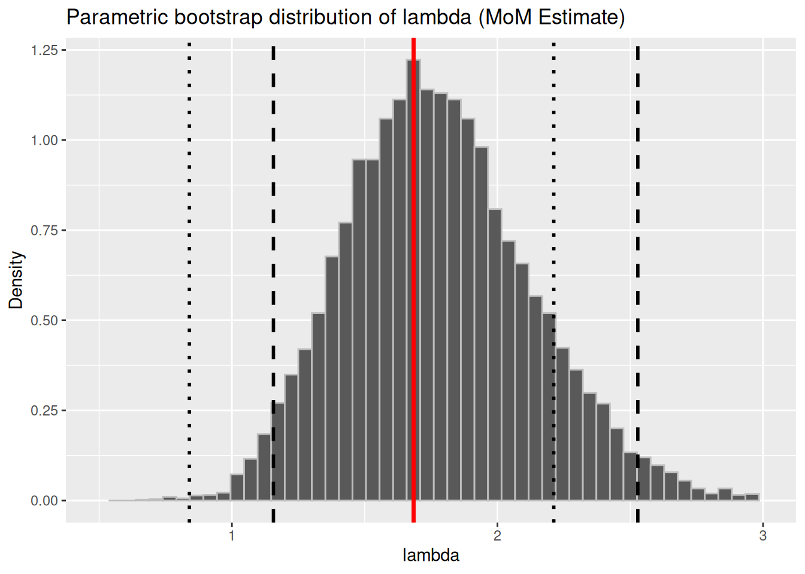
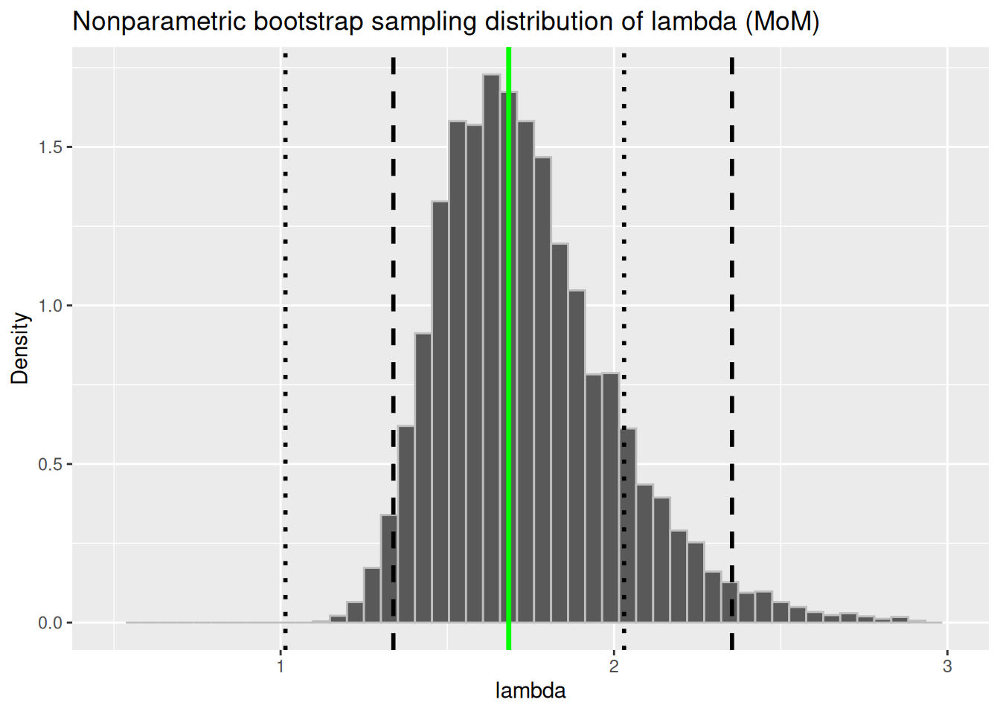

Code
### illiois_rain was a pain to type.
il_rain <- illinois_rain
### Just cleaning up a bit
il_rain <- il_rain |>
rename(rain_inches =X1)
il_rain <- il_rain |>
mutate(year = as.factor(year))In the last lecture, we discussed how to compute the standard error of the method of moments estimator when it is a linear function of the first sample moment, which is the sample mean. In this case, computing the standard error is straightforward, as the CLT applies to linear functions of the sample mean. This means that the estimator will be approximately Normal for a large enough sample of IID random variables from the distribution.
Just to recap what we discussed in the last lecture, adding a bit more detail for the Poisson case: first we have to derive the standard error of our estimator. Note that this is a constant. Next we use our standard method of estimating the standard error: we plug in the estimated values of the parameters. This gives us the estimated standard error of the method of moments estimator.
Example Let \(X_1, \ldots, X_n\) be an IID random sample from a Poisson(\(\lambda\)) distribution. Since \(E(X_i) = \operatorname{Var}(X_i)= \mu_1 = \lambda\), this means that the method of moments estimator \(\hat{\lambda}_n = \overline{X}_n\).
This makes it easy to compute the standard error of our estimator. Note that \[ \operatorname{Var}(\hat{\lambda}_n) = \operatorname{Var}(\overline{X}_n) = \frac{\sigma^2}{n} = \frac{\lambda}{n}. \] Why is \(\operatorname{Var}(\overline{X}_n) = \dfrac{\sigma^2}{n}\)?
In general, given an IID sample \(X_1, \ldots, X_n\) with mean \(\mu\) and variance \(\sigma\), we know that
\[ \operatorname{Var}(\overline{X}_n) = \operatorname{Var}\left(\frac{1}{n}\sum_{i=1}^\infty X_i\right) = \frac{1}{n^2}\left(\sum_{i=1}^\infty\operatorname{Var} (X_i)\right) = \frac{n \sigma^2}{n^2} = \frac{\sigma^2}{n}. \]In the Poisson case, \(X_i \sim Poisson(\lambda)\) for \(i = 1, 2, \ldots, n\), so we know that the mean and variance of each \(X_i\) is \(\lambda\). This means that the variance of the sum of all the \(X_i\) is \(n\lambda\), since they are independent. Therefore, the variance of the sample mean is \(\dfrac{n\lambda}{n^2} = \dfrac{\lambda}{n}\).
This implies that the standard error of the estimator \(\hat{\lambda}_n = \overline{X}_n\) is given by \(\displaystyle \sqrt{\frac{\lambda}{n}}\), and by the central limit theorem, \(\hat{\lambda}_n\) is approximately normally distributed for large \(n\).
\[ \hat{\lambda}_n \approx \mathcal{N}(\lambda, \frac{\lambda}{n}). \]
Remember that \(SE(\hat{\lambda}_n)\) is a constant. But we can estimate it with our usual trick of using our estimate of \(\lambda\). We get that the estimated standard error of the method of moments estimator is given by: \[ \hat{SE}(\hat{\lambda}_n) = \sqrt{\frac{\hat{\lambda}_n}{n}}. \] The hat on the SE above reminds us that this is not a constant, but a quantity that depends on the sample.
The method used above is not going to work if the estimator \(\hat{\theta}\) is a nonlinear function of the sample mean, since the CLT will not apply. We need another way to figure out the standard error. As mentioned in the previous chapter, we will use a standard statistical technique called the delta method, in which, when “confronted with a nonlinear problem that we cannot solve, we linearize”.(Rice 2006)
Example Recall that the exponential distribution with rate \(\lambda\) has mean and variance \(\dfrac{1}{\lambda}\) and \(\dfrac{1}{\lambda^2}\), respectively. In this case, the estimator \(\hat\lambda_n = \dfrac{1}{\overline{X}_n}\), that is, it is the reciprocal of the sample mean.So even though we have a very good idea of the mean and variance of the sample first moment (that is, the sample mean), it is not helpful as we cannot use it directly to compute the moments of \(\hat\lambda_n\).
Suppose we have a random variable \(X\) with known mean \(\mu_X\) and variance \(\sigma_X^2\), but we are interested in a different random variable \(Y = g(X)\) where \(g\) is not a linear function of \(X\), and therefore \(E(Y) = E(g(X)) \ne g(E(X))\).
The main idea behind the delta method is that we use a Taylor series expansion of \(g\) about \(\mu_X\) and linearize \(Y = g(X)\), and once we do that, we can approximate the mean and variance of \(Y\).
Let’s do the first order expansion: \[ Y = g(\mu_X) + (X-\mu_X)g'(\mu_X) + R. \]
\(R\) is the remainder term that will be negligible for large \(n\) because of higher powers of \((X-\mu_X)\).
This implies that \(\displaystyle Y \approx g(\mu_X) + (X-\mu_X)g'(\mu_X)\), and so taking expectations on both sides, we get: \[ Y \approx g(\mu_X) + (X-\mu_X)g'(\mu_X) \Rightarrow E(Y) \approx E\left[g(\mu_X)\right] \]
(Since \(E(X-\mu_X) = 0\).) This method (of linearizing \(Y\) in order to approximate its mean and variance) is called the delta method because it comes from writing \(\delta = \hat{\theta} - \theta\) and then expanding \(g(\theta + \delta)\) as a function of \(\delta\). (Chihara and Hesterberg 2018)
We can also do a second order Taylor’s series expansion to improve our approximation: \[ Y = g(X) \approx g(\mu_X) + (X-\mu_X)g'(\mu_X) + \dfrac{1}{2}(X-\mu_X)^2 g''(\mu_X) \] Taking expectations gives us that \[ E(Y) \approx g(\mu_X) + \dfrac{1}{2} \sigma_X^2 g''(\mu_X). \]
How good the linear approximation is depends on how nonlinear \(g\) is in a neighborhood of \(\mu_X\), and on the variance of \(X\).
Going back to the first order approximation, we have that \(Y \approx g(\mu_X) + (X-\mu_X)g'(\mu_X)\). Squaring both sides gives: \[ Y^2 \approx \left(g(\mu_X)\right)^2 + \left(g'(\mu_X)\right)^2(X - \mu_X)^2 + 2g'(\mu_X)(X-\mu_X) \] Again, since \(E(X-\mu_X) = 0\), we get that \[ \operatorname{Var}(Y) \approx \left[g'(\mu_X)\right]^2 \sigma_X^2. \] Note that we can apply the delta method in a multivariate setting, but here we will only consider univariate functions.
And now, we have the mean and the variance (approximately) of \(g(X)\), and we are ready for its asymptotic distribution.
Suppose we have a sequence of random variables \(\{U_n\}\) that is asymptotically normal,that is, there exist constants \(\theta, \sigma\), where \(\sigma > 0\), such that \[ \sqrt{n} \left(\dfrac{U_n -\theta}{\sigma} \right)\overset{D} \longrightarrow \mathcal{N}(0,1). \] That is, the distribution of \(U_n\), suitably standardized, converges to a standard normal distribution. Then, for any differentiable function \(g\), such that \(\lvert g'(\theta)\rvert \ne 0\), we have: \[ \sqrt{n} \left(\dfrac{g(U_n) -g(\theta)}{\lvert g'(\theta)\rvert \sigma} \right)\overset{D} \longrightarrow \mathcal{N}(0,1). \] That is, \(g(U_n)\) is also approximately normal for large \(n\): \[ g(U_n) \approx \mathcal{N}\left(g(\theta), \frac{\lvert g'(\theta)\rvert^2 \sigma^2}{n}\right) \]
Proof sketch
Using Taylor expansion (or the delta method) of \(g\) about \(\theta\), we have that \[ g(U_n) = g(\theta) + (U_n - \theta)g'(\theta) + R, \] where \(R\) is a remainder term that goes to \(0\) as \(n \rightarrow \infty\).
Subracting \(g(\theta)\) from both sides and multiplying both sides by \(\sqrt{n}\) we get: \[ \sqrt{n}\left[g(U_n) - g(\theta)\right] = \sqrt{n} (U_n - \theta)g'(\theta) + R \] Notice that multiplying the remainder term by \(\sqrt{n}\) makes no difference, it will still go to \(0\) as \(n \rightarrow \infty\), so we just continue to write it as \(R\).
We know that \(\sqrt{n} (U_n - \theta)/\sigma\) is approximately standard normal(that is \(\sqrt{n} (U_n - \theta)/\sigma \approx \mathcal{N}(0, 1))\) which implies that \(\sqrt{n} (U_n - \theta)\) is approximately normal with mean \(0\) and variance \((\sigma\cdot g'(\theta))^2\). Therefore the lefthand side also must be approximately normal with the same parameters: \[ \sqrt{n}\left[g(U_n) - g(\theta)\right] \approx \mathcal{N}\left(0, [\sigma\cdot g'(\theta)]^2\right). \]
which gives us the result of the theorem (by dividing by \(\lvert \sigma\cdot g'(\theta)\rvert\)).
Instead of \(\{U_n\}\), we have our sequence of sample means \(\{\overline{X}_n\}\), and \(g(\{\overline{X}_n\}) = \hat{\theta}\). By the delta method, we have that \[ \sqrt{n}\left(\frac{\overline{X}_n - g(\mu)}{\lvert g'(\mu)\rvert\sigma}\right)\overset{D}{\longrightarrow}\mathcal{N}(0,1). \] This implies that \[ g(\overline{X}_n) \approx \mathcal{N}\left(g(\mu), \frac{(g'(\mu))^2\sigma^2}{n}\right) \] Note that \(\mu\) and \(\sigma\) are unknown constants, and so we can estimate the parameters of this asymptotic normal distribution with our estimate for \(\theta\): \[ \hat{\theta} = g(\hat{\mu}_1), \] and estimate \(\sigma^2\) by the sample variance \(S^2\). Thus we conclude that \[ \hat{\theta}_{MoM} = g(\hat{\mu}_1) \approx \mathcal{N}\left(\theta, \frac{(g'(\hat{\mu}_1))^2 S^2}{n}\right). \]
If \(\hat{\theta}\) is more complex, such as when we estimate the parameters of the Gamma distribution, \(\alpha\) and \(\lambda\). Recall their method of moments estimators2: \[ \hat\alpha = \frac{\overline{X}_n^2}{S^2} \quad \quad \quad \quad \hat \lambda = \frac{\overline{X}_n}{S^2} \] If we want the sampling distributions of these estimators, none of the methods we have used so far will work, as both \(\hat\alpha\) and \(\hat\lambda\) are complicated functions of the sample mean.So we will use our computers to construct bootstrap distributions of these quantities.
The bootstrap is a resampling method for estimating measures of accuracy (such as variance or confidence intervals) for the estimator when obtaining them analytically is difficult. Resampling methods have become extremely common and absolutely indispensable in statistics due to the widespread availability of computing power. We use the bootstrap to quantify the uncertainty associated with an estimator.
We can view the sample as the population in two ways, leading to two different kinds of bootstrap.
We know the distribution of the population is from a particular parametric family of distributions. We estimate the parameters of that distribution, and then resample from the estimated distribution, using these samples to build a probability distribution for our parameter estimator. This method is called the parametric bootstrap. This is a more logical fit for the method of moments estimators.
We don’t know the population distribution, and don’t know if a parametric family is appropriate. We just resample from the sample. This is called a nonparametric bootstrap as we make no assumption about the distribution, and can be used in a very wide variety of situations.
The basic idea of the bootstrap is to use the empirical distribution of the sample as an approximating distribution of the population when the sample is large. That is, we use the sample as a stand-in for the population, and resample from it.
The name comes from the phrase, “pull yourself up by your bootstraps” which means to succeed by your own cleverness/hard work - without getting help from others; here we estimating something tricky by cleverly reusing the same sample we started with.
Bootstrap works only if the sample is large enough to accurately represent the population distribution.
The bootstrap procedure to approximate the sampling distribution for \(\hat\theta\), given a sample \(X_1, \ldots, X_n\) would be:
You could also plot the histogram of these values to get a visualization of the distribution.
There are a number of ways to using the bootstrap to compute confidence intervals. Here are three ways of finding a \(100(1-\alpha)\%\) confidence interval (\(0<\alpha<1\)). For a 95% confidence interval, \(\alpha = 0.05\).
The confidence interval is given by \((q_{\alpha/2}, q_{1-\alpha/2})\), where \(q_{\alpha/2}\) is the \(\alpha/2\)th quantile of the bootstrap distribution and \(q_{1-\alpha/2}\) is the \((1-\alpha/2)\)th quantile of the bootstrap distribution. Since \(P(\hat\theta^* \le q_{\alpha/2}) = \alpha/2\), and \(P(\hat\theta^* \le q_{1-\alpha/2}) = 1-\alpha/2\), the area captured in the middle is \(1-\alpha\), which is what we need. This is usually fine unless the distribution is very skewed.
This is sometimes called the reverse percentile interval and is the one defined in your textbook. We can use the bootstrap to compute approximate confidence intervals for the true value of \(\theta\). Suppose the true value of the parameter \(\theta\) is given by \(\theta_0\).
Define \(\Delta = \hat\theta - \theta_0\), and suppose we know the distribution of \(\Delta\). This means that we know the quantiles of this distribution, and if we want to capture the middle 95% of the values, we can use the 2.5th percentile and 97.5th percentiles to do this. Denote the 2.5th percentile by \(q_{0.025}\) and the 97.5th percentile by \(q_{0.975}\).
This means that \(P(\Delta \le q_{0.025}) = 0.025\) and \(P(\Delta \le q_{0.975}) = 0.975\)
Then we have that: \[ P(q_{0.025}\le \Delta \le q_{0.975}) = 0.95 \Rightarrow P(q_{0.025}\le \hat\theta - \theta_0 \le q_{0.975}) = 0.95 \] We can manipulate the inequalities to isolate \(\theta_0\) in the center: \[ \begin{align} 0.95 &= P(q_{0.025}\le \hat\theta - \theta_0 \le q_{0.975})\\ &= P(q_{0.025} -\hat\theta \le - \theta_0 \le q_{0.975} -\hat\theta)\\ &= P(- q_{0.025} + \hat\theta \ge \theta_0 \ge - q_{0.975} + \hat\theta)\\ &= P( \hat\theta - q_{0.975}\le \theta_0 \le \hat\theta -q_{0.025}) \\ \end{align} \] This gives us a 95% confidence interval for \(\theta_0\). There is nothing special about 95%, except that it is commonly used as a confidence level. We could use any confidence level, say \(1-\alpha\). (When we use a 95% CI, \(\alpha\) is \(0.05\).)
Then, to capture \(1-\alpha\) in the middle, we need the \(\dfrac{\alpha}{2}\) and \(1-\dfrac{\alpha}{2}\) quantiles in place of \(q_{0.025}\) and \(q_{0.975}\) respectively. Denote these quantiles by \(q_{\alpha/2}\) and \(q_{1-\alpha/2}\) We do the manipulation above and get the following: \[ P( \hat\theta - q_{1-\alpha/2}\le \theta_0 \le \hat\theta -q_{\alpha/2}) = 1-\alpha. \] The only problem of course is that we don’t know the distribution of \(\Delta = \hat\theta - \theta_0\). This is where we can use the bootstrap. We generate many samples (\(B\) samples, as mentioned above, where \(B\) is large), and compute \(\hat\theta_1^*, \hat\theta_2^*, \ldots, \hat\theta_B^*\) from each sample. Then the distribution of \(\hat\theta -\theta_0\) is approximated by the distribution of \(\hat\theta^* - \hat\theta\).
Note that the quantiles of the approximated \(\Delta\) distribution (using \(\hat\theta^* -\hat\theta\)) are just the quantiles of the \(\hat\theta^*\) distribution less \(\hat\theta\). That is, if we let \(q_\alpha\) be the \(\alpha\)th quantile of the \(\Delta\) distribution, and \(q_\alpha^*\) be the \(\alpha\)th quantile of the \(\hat\theta^*\) distribution, \(q_\alpha = q_\alpha^* - \hat\theta\). Substituting this into our confidence interval above, we get that the basic \(100(1-\alpha)\%\) confidence interval for \(\theta_0\) can be written as \((2\hat\theta - q_{1-\alpha/2}^*,2\hat\theta - q_{\alpha/2}^* )\).
This is the simplest, and will be fine if the distribution looks approximately normal. It is simply given by \(\hat\theta \pm z_{\alpha/2}\times s_{\mathrm{boot}}\), where \(s_{\mathrm{boot}}\) is the bootstrap estimate of the standard error of \(\theta\).
# the data was read in using read_csv
# putting all of these datasets together
# using bind_rows from dplyr
# similar to rbind
illinois_rain <- bind_rows(
illinois_60 %>% mutate(year = "1960"),
illinois_61 %>% mutate(year = "1961"),
illinois_62 %>% mutate(year = "1962"),
illinois_63 %>% mutate(year = "1963"),
illinois_64 %>% mutate(year = "1964")
)### illiois_rain was a pain to type.
il_rain <- illinois_rain
### Just cleaning up a bit
il_rain <- il_rain |>
rename(rain_inches =X1)
il_rain <- il_rain |>
mutate(year = as.factor(year))A snapshot of the data:
glimpse(il_rain)Rows: 227
Columns: 2
$ rain_inches <dbl> 0.020, 0.001, 0.001, 0.120, 0.080, 0.420, 1.720, 0.050, 0.…
$ year <fct> 1960, 1960, 1960, 1960, 1960, 1960, 1960, 1960, 1960, 1960…Computing sample moments and observed values of the method of moments estimators:
il_moments <- il_rain |>
summarise(
mu1 = mean(rain_inches, na.rm = TRUE),
mu2 = mean(rain_inches^2, na.rm = TRUE),
sigma_hat_sq = mu2-mu1^2,
lambda = mu1/sigma_hat_sq,
alpha = mu1^2/sigma_hat_sq
)
il_moments# A tibble: 1 × 5
mu1 mu2 sigma_hat_sq lambda alpha
<dbl> <dbl> <dbl> <dbl> <dbl>
1 0.224 0.184 0.133 1.68 0.378Pulling the observed estimator values out of the data frame il_moments and saving the numeric values.
# pull() pulls the vector out of the data frame, similar to $ in base R
obs_alpha <- pull(il_moments, alpha)
obs_lambda <- pull(il_moments, lambda)
print(c(obs_alpha = obs_alpha, obs_lambda = obs_lambda)) obs_alpha obs_lambda
0.3779155 1.6841748 Now for a plot of the data and an overlaid Gamma density using our method of moments estimates as parameters to see if it is an appropriate choice for this data.
### plotting the distribution: the histogram overlaid with the density
il_rain |>
ggplot(mapping = aes(x = rain_inches)) +
geom_histogram(aes(y = after_stat(density)), color = "grey") +
stat_function(fun = dgamma, args = list(shape = obs_alpha, rate = obs_lambda)) +
ylim(0,6)+
labs(
title = "Rainfall per storm with Gamma (MoM) fit",
x = "Rainfall per storm",
y = "Density"
)`stat_bin()` using `bins = 30`. Pick better value with `binwidth`.Warning: Removed 1 row containing missing values or values outside the scale range
(`geom_function()`).
First, we will do the parametric bootstrap, with \(B = 10,000\). Our sample size is 227, so that will be the size of each sample we generate.
It is better to write a function that you can then put into replicate(). We input a vector and return a list that contains the MoM estimators.
# function to compute alpha and lambda given a vector
# note that we need to input a VECTOR not a df.
gamma_mom <- function(x) {
mu1 <- mean(x, na.rm = TRUE)
mu2 <- mean(x^2, na.rm = TRUE)
sigma_hat_sq <- mu2-mu1^2
lambda <- mu1/sigma_hat_sq
alpha <- mu1^2/sigma_hat_sq
return(c(alpha = alpha , lambda = lambda))
}Let’s test our function gamma_mom against the observed values that we computed earlier. Note that theta_hat below is a vector
theta_hat <- gamma_mom(pull(il_rain, rain_inches))
cat("does gamma_mom give the correct values\n")does gamma_mom give the correct valuesobs_alpha == theta_hat["alpha"]alpha
TRUE obs_lambda == theta_hat["lambda"]lambda
TRUE Now the next bit of code, which you can read, generates the bootstrap values, and then stores it as a data frame rather than a matrix.
boot_mat <- replicate(B, gamma_mom(rgamma(n, shape = obs_alpha, rate = obs_lambda)))
#' In order to plot the distributions as histograms, we need a data frame,
#' so let's transpose the matrix boot_mat and make sure it is still a data frame
#' since that is what we need to input into ggplot.
boot_df <- as.data.frame(t(boot_mat))We check the first few rows of our data frame
head(boot_df) alpha lambda
1 0.3582914 1.622130
2 0.3108627 1.802807
3 0.3432051 1.457107
4 0.4876132 1.977671
5 0.4973687 2.090700
6 0.3600022 1.929336Computing the 0.025th and 0.975th quantiles of the distribution for both alpha and lambda:
## finding the quantiles of the distribution
alpha_lq <- quantile(boot_df$alpha, probs = 0.025, na.rm = TRUE)
alpha_uq <- quantile(boot_df$alpha, probs = 0.975, na.rm = TRUE)
lambda_lq <- quantile(boot_df$lambda, probs = 0.025, na.rm = TRUE)
lambda_uq <- quantile(boot_df$lambda, probs = 0.975, na.rm = TRUE)
cat("alpha 0.025th quantile =", alpha_lq, "\n")alpha 0.025th quantile = 0.2722415 cat("alpha 0.975th quantile =", alpha_uq, "\n")alpha 0.975th quantile = 0.5255163 cat("lambda 0.025th quantile =", lambda_lq, "\n")lambda 0.025th quantile = 1.156345 cat("lambda 0.975th quantile =", lambda_uq, "\n") lambda 0.975th quantile = 2.528419 Here is the percentile 95% confidence interval for \(\alpha\)
## percentile confidence intervals
alpha_ci <- c(alpha_lq, alpha_uq)
cat("A percentile 95% CI for alpha is ", alpha_ci)A percentile 95% CI for alpha is 0.2722415 0.5255163Here is the percentile 95% confidence interval for \(\lambda\)
## percentile confidence intervals
lambda_ci <- c(lambda_lq, lambda_uq)
cat("A percentile 95% CI for lambda is ", lambda_ci)A percentile 95% CI for lambda is 1.156345 2.528419Here is the basic or reverse confidence interval for alpha
## basic confidence intervals
alpha_ci_basic <- c(2*obs_alpha -alpha_uq, 2*obs_alpha -alpha_lq )
cat("A basic 95% CI for alpha is ", alpha_ci_basic)A basic 95% CI for alpha is 0.2303147 0.4835894Here is the basic or reverse confidence interval for lambda
lambda_ci_basic <- c(2*obs_lambda -lambda_uq, 2*obs_lambda -lambda_lq )
cat("A basic 95% CI for lambda is ", lambda_ci_basic)A basic 95% CI for lambda is 0.8399301 2.212005Finally the graph of the parametric bootstrap distribution for alpha. The dashed vertical lines show the percentile CI and the dotted lines are the basic CI.
p1 <- boot_df |> ggplot(aes(x = alpha)) +
geom_histogram(aes(y = after_stat(density)), bins = 50, color = "grey") +
geom_vline(xintercept = alpha_ci, linetype = "dashed", linewidth = 1) +
geom_vline(xintercept = obs_alpha, linewidth = 1.2, color = "red") +
geom_vline(xintercept = alpha_ci_basic, linetype = "dotted", linewidth = 1) +
xlim(0.2,0.6)+
labs(title = "Parametric bootstrap distribution of alpha (MoM Estimate)",
x = "alpha", y = "Density")
p1Warning: Removed 27 rows containing non-finite outside the scale range
(`stat_bin()`).Warning: Removed 1 row containing missing values or values outside the scale range
(`geom_bar()`).
The same figure for lambda:
p2 <- boot_df |> ggplot(aes(x = lambda)) +
geom_histogram(aes(y = after_stat(density)), bins = 50, color = "grey") +
geom_vline(xintercept = lambda_ci, linetype = "dashed", linewidth = 1) +
geom_vline(xintercept = obs_lambda, linewidth = 1.2, color = "red") +
geom_vline(xintercept = lambda_ci_basic, linetype = "dotted", linewidth = 1) +
xlim(0.5, 3) +
labs(title = "Parametric bootstrap distribution of lambda (MoM Estimate)",
x = "lambda", y = "Density")
p2Warning: Removed 12 rows containing non-finite outside the scale range
(`stat_bin()`).Warning: Removed 2 rows containing missing values or values outside the scale range
(`geom_bar()`).
Now for the nonparametric bootstrap. Again, we set \(B = 10,000\), and the sample size \(n\) to be 227. That means that we wil resample with replacement 10,000 times from the original sample. Each time, the size of the sample we draw will be 227, and we will compute the estimates \(\hat\alpha^*\) and \(\hat\lambda^*\). The \(*\) indicates that it is a bootstrap estimate.
### Nonparametric bootstrap
### nonparametric bootstrap, resampling from the sample. I used $ here to
### pull the column of rainfall in inches, since we should input a vector into the function
### sample, and not a data frame.
boot_mat_np <- replicate(B,
{xb <- sample(il_rain$rain_inches, size = n, replace = TRUE)
gamma_mom(xb)})
### taking the transpose of the matrix created using replicate
### to create a data frame for plotting.
boot_np <- as.data.frame(t(boot_mat_np))In this next bit of code, we will first compute the quantiles for both distributions, and then compute the same confidence intervals as we did in the parametric case.
### Computing the lower and upper quantiles
alpha_lq_np <- quantile(boot_np$alpha, probs = 0.025, na.rm = TRUE)
alpha_uq_np <- quantile(boot_np$alpha, probs = 0.975, na.rm = TRUE)
lambda_lq_np <- quantile(boot_np$lambda, probs = 0.025, na.rm = TRUE)
lambda_uq_np <- quantile(boot_np$lambda, probs = 0.975, na.rm = TRUE)
## percentile confidence intervals
alpha_ci_np <- c(alpha_lq_np, alpha_uq_np)
lambda_ci_np <- c(lambda_lq_np,lambda_uq_np)
cat("A percentile 95% CI for alpha, computed from a nonparametric bootstrap, is ", alpha_ci_np)A percentile 95% CI for alpha, computed from a nonparametric bootstrap, is 0.3027645 0.489711cat("A percentile 95% CI for lambda, computed from a nonparametric bootstrap, is ", lambda_ci_np)A percentile 95% CI for lambda, computed from a nonparametric bootstrap, is 1.338175 2.353851## basic confidence intervals
alpha_ci_basic_np <- c(2*obs_alpha -alpha_uq_np, 2*obs_alpha -alpha_lq_np )
lambda_ci_basic_np <- c(2*obs_lambda -lambda_uq_np, 2*obs_lambda -lambda_lq_np )
###
cat("A basic 95% CI for alpha, computed from a nonparametric bootstrap, is ", alpha_ci_basic_np)A basic 95% CI for alpha, computed from a nonparametric bootstrap, is 0.2661199 0.4530664cat("A basic 95% CI for lambda, computed from a nonparametric bootstrap, is ", lambda_ci_basic_np)A basic 95% CI for lambda, computed from a nonparametric bootstrap, is 1.014498 2.030175Now for the plots. The code is the same as before, except for using the nonparametric samples.
p3 <- ggplot(boot_np, aes(x = alpha)) +
geom_histogram(aes(y = after_stat(density)), bins = 50, color = "grey") +
geom_vline(xintercept = alpha_ci_np, linetype = "dashed", linewidth = 1) +
geom_vline(xintercept = alpha_ci_basic_np, linetype = "dotted", linewidth = 1) +
geom_vline(xintercept = obs_alpha, linewidth = 1.2, color = "green") +
xlim(0.2,0.6) +
labs(
title = "Nonparametric bootstrap sampling distribution of alpha (MoM)",
x = "alpha",
y = "Density"
)
p3Warning: Removed 2 rows containing non-finite outside the scale range
(`stat_bin()`).Warning: Removed 1 row containing missing values or values outside the scale range
(`geom_bar()`).
p4 <- ggplot(boot_np, aes(x = lambda)) +
geom_histogram(aes(y = after_stat(density)), bins = 50,color = "grey") +
geom_vline(xintercept = lambda_ci_np, linetype = "dashed", linewidth = 1) +
geom_vline(xintercept = lambda_ci_basic_np, linetype = "dotted", linewidth = 1) +
geom_vline(xintercept = obs_lambda, linewidth = 1.2, color = "green") +
xlim(0.5, 3) +
labs(
title = "Nonparametric bootstrap sampling distribution of lambda (MoM)",
x = "lambda",
y = "Density")
p4Warning: Removed 10 rows containing non-finite outside the scale range
(`stat_bin()`).Warning: Removed 2 rows containing missing values or values outside the scale range
(`geom_bar()`).